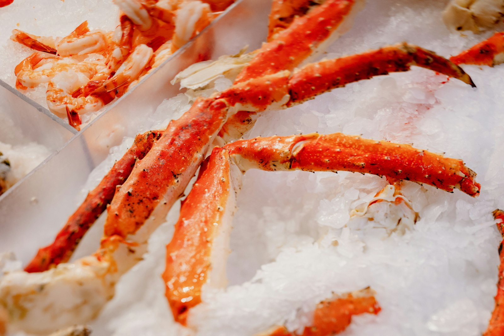
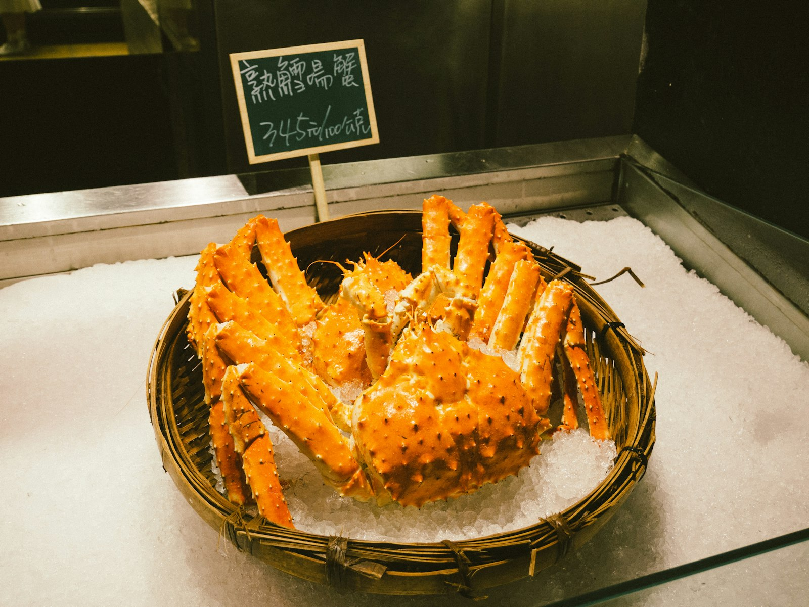
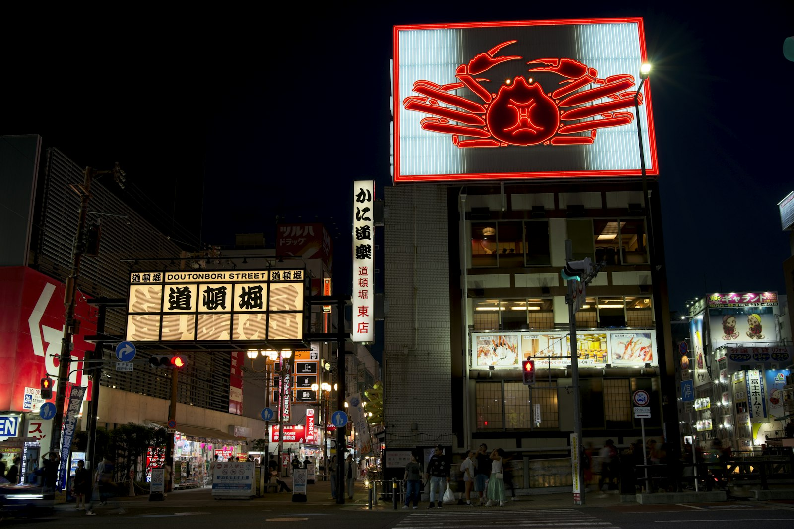

リベシティ「Claude Academy実践学習」第8回（記述力・Description）のために作った、実在しない宿・架空の旅程です。同じ「城崎温泉2泊3日」というお題でも、AIへの指示（目的の伝え方）が変わるだけで、ホームページの中身も温度もまったく変わる――その実例として公開しています。
「城崎温泉2泊3日。豪華カニとグルメを食べ尽くしたい。テンション高めで。」
詳しい時間割は下にスクロール。まずは全体の温度感から。
駅前で湯上がりビールならぬ「到着まん」。ジューシーな但馬牛まんを頬張りながら旅の始まりに乾杯。
柳並木と大谿川を眺めながら下駄をカランコロン。1湯目・2湯目とテンポよく巡って、汗と一緒に旅の疲れも流す。
外湯の源泉で作る温泉たまごを1個。とろとろの半熟に塩をひとふり。仕上げは但馬牛乳のジェラートで一息。
川沿いの部屋で一服。仲居さんが運んでくる案内板には、もう今夜のカニ会席のメニューが。期待値が最高潮に。
茹でガニと焼きガニ、まずは王道の2本柱から。カニ味噌は甲羅酒でしみじみ味わう、幸せな導入編。
満腹のまま3湯目へ。夜の温泉街は提灯の灯りでいっそう情緒たっぷり。部屋に戻ったら爆睡コース。

出汁にカニの旨みがしっかり。朝から満たされて、今日一日への戦闘力が上がる。
地元のおばちゃんたちが並べる干物や野菜、日本酒の量り売りをのぞきながら試食三昧。お土産の当たりをここで見つける。
日本海の朝どれネタがぎっしり。カニ、ぶり、白イカ……欲張った分だけ幸せになれる丼。
但馬の水と米で仕込んだ地酒を利き酒。今夜のカニすきに合わせる1本をここで選定する、実は大事な工程。
練り物の天ぷらを揚げたてで、続けて濃厚ソフトクリーム。歩いてカロリーを言い訳にする、いつもの必勝パターン。
今夜が今回の旅のメインイベント。カニすき鍋からの雑炊シメまで、選んだ地酒とともにとことん味わい尽くす。
満腹すぎる体を4湯目でリセット。川沿いの灯りを眺めながら、今日一日の食べっぷりを振り返る贅沢な時間。
出汁をかけた瞬間にふわっと香るカニ。ここまで食べてきて、それでもまだ「もう一杯」と言ってしまう恐ろしさ。
ここまでで巡った外湯は6つ。チェックアウト前に最後の1湯へ駆け込んで、有言実行のコンプリート。
職場や家族への分は少なめ、自分用は多め。カニの甘みが濃縮されたせんべいと、昨日選んだ地酒を追加購入。
「もう食べられない」と言いながら注文してしまう、旅の最後にありがちな現象。満腹のまま帰路につく。

カニ会席だけでは終わらない。温泉街を歩くだけで出会える、城崎・但馬の名物たち。
日本海の朝どれをぎゅっと乗せた贅沢丼。カニ入りの特盛が定番の勝負メニュー。
肉汁があふれる名物まん。到着した瞬間まず1個、が合言葉。
源泉でじっくり茹でた半熟たまご。外湯めぐりの合間にちょうどいい一口。
但馬牛乳や地元フルーツのジェラート。食べ歩きの合間の甘い休憩に。
蔵元の飲み比べセットで好みの1本を発掘。夜のカニすきの相棒に。
干物・野菜・お土産が並ぶ、地元の空気を感じられる時間。試食もたっぷり。

宿の浴衣のまま外湯も食べ歩きもOK。雰囲気が一気に上がる。
1食を大きく食べるより、食べ歩きで小分けにすると最終的にたくさん食べられる。
初日は控えめ、地酒を試飲した2日目に本気を出すと満足度が高い。
荷物を増やさず身軽に食べ歩くなら、購入は3日目の朝がベスト。